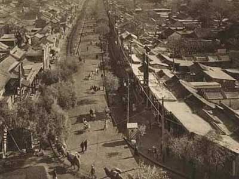

《论语》详解：给所有曲解孔子的人（14）
2006/10/26 12:01:32

子曰：贫而无怨难；富而无骄易。
详解：上面两章都说到面对“贫富”的“不相”问题，不过都是从“安贫”而“乐道”这个角度说的。但并不是说贫穷就是好的，富就是不好的。“贫富”都是“相”，对于行“圣人之道”的君子来说，对于“贫富”只存在一个如何面对的问题，而不存在好和不好的问题。“贫”和“富”，都不影响行“圣人之道”，“圣人之道”是大道，不是某类人的专利，无论穷人还是富人，一律平等，没有哪类人有优先权。
“贫”和“富”，在任何现实社会中都会存在的，而且关系到每一个人，特别在财富分配不公的社会，这问题就更加突出。但这里相应的理解，不能光局限在财富上，例如学识上也有“贫富”问题，权力、权利分配上同样有类似的问题。任何一个现实的人构成的现实中的社会，都不可能在所有方面绝对的平等，只要不平等，必然面临着“贫富”问题，无论是在财富、学识，还是权力、权利等方面，这个问题都是无可逃避的。
但这一章，自古以来都把其中的“难”当成平声，相应的断句其实就成了“贫而无怨，难；富而无骄，易。”例如，朱熹等人就是这样把“难”当成“难易”的“难”了，这句话的意思就成了“贫穷而不怨恨是困难的，富贵而不骄横是容易的。”而如果这是人之常情，那这话就成了废话，但事实上，这样的解释连废话都算不上，只能是瞎话。自古以来的现实往往是穷人经常乐呵呵，富人却骄横无理，要把穷人赶尽杀绝。这章，自古以来的断句、解释都是错误的。
正确的断句应该是“贫而无怨难；富而无骄易。”这里的关键在于“难”，不是平声，而“易”也不是“容易”的意思。不过还是先从“怨”说起，程度浅的“埋怨”、程度深的“怨恨”，被“怨”的就成了“仇人”了。这个“怨”，在古代就包含了“埋怨、怨恨、仇人”等意思。而因“怨”就会生“难”。何谓“难”？“难”，去声，是“敌对、造反、灾难”的意思。因“怨”而有“仇”而“敌对”甚至“造反”，这不是“灾难”是什么？
“骄”，本义是“健壮”的意思。富人，自以为“健壮”，因此“骄傲”进而“傲慢”甚至“骄横”最后达到“强烈”的程度。这个“骄”，在古代就包含了“健壮、骄傲、傲慢、骄横、强烈”等意思。“易”，不是“容易”的意思，其本义是“赐给”的意思。富人，自以为自己的“富”是上天“赐给”的或者是自己的天赋、努力“交换”来的，因而产生“轻视、怠慢”，最终对立在社会上“蔓延”。“赐给、交换、轻视、怠慢、蔓延”，都包含在“易”里。
君子行“圣人之道”，就是要把“人不知”的世界变成“人不愠”的世界。而“人不愠”的前提是“人不相”，在具体的社会存在中，包括财富、学识、权力、权利等方面的广义“贫富”，是社会中最大的“相”。而这个贫富之“相”在任何“人不知”的社会中，都体现为“贫而怨难；富而骄易。”君子行“圣人之道”，把“人不知”的世界变成“人不愠”的世界，首要面对的就是如何把这个“贫富”之“相”“不相”之，要让“贫而无怨难；富而无骄易。”这，就是面对“贫富”的“不相”之谋。
要让“贫而无怨难；富而无骄易。”不是让一个权威、教主等发一个倡议或来一段布道就可以完成的，更不是用强制或诱惑的手段把人改造成具有“贫而无怨难、富而无骄易。”的思想的新人来掩盖现实无法掩盖的“贫富”之“相”。而是在“贫富”存在的现实中，用各种现实的经济、政治、法律、文化等手段来实现“贫而无怨难、富而无骄易。”的“不相”。
对于《论语》、对于儒家来说，“不相”是“人不知”到“人不愠”的中间环节也是必经之路。“不相”是“相而不相”，不以“相”相之。首先不能否认“相”的存在，正因为有“相”的存在，才需要“不相”。例如，对于“贫富”之相来说，其存在是客观的，否认这种存在只能是掩耳盗铃、睁眼说瞎话，这不是“不相”，而是严重地“相”了。真正的“不相”，就是直面这“贫富”之相的存在，用在社会经济、政治、法律、文化等方面，不以“贫富”之相相之，进而对“贫富”之相“不相”之。
何谓社会经济、政治、法律、文化上对“贫富”的“不相”？就是采取公平、一视同仁之谋，“贫”或“富”都不是偏袒的理由。而“贫”或“富”之间也要“不相”，也要相互平等视之。对“为富不仁”的就要坚决打击，因为“为富不仁”者以“富”为相，所以就要对之“不相”，将其“富”者之相给去了；对“贫而自贱”者要“富之贵之”，因为“贫而自贱”者以“贫”为相，所以就要对之“不相”，将其“贫”者之相给去了；对“挟贫而贼”的坚决打击，因为“挟贫而贼”者以“贫”为相，所以就要对之“不相”，将其“贫”者之相给去了。
必须再次说明的，这里的“贫富”，不单单指财富上的，例如权力上的“贫富”，就有所谓的“官民”之别，政治地位的“贫富”就有所谓统治阶级与被统治阶级之分。必须在广义的“贫富”上最终成就“贫而无怨难；富而无骄易。”的“不相”，才能真正地“不相”。否则只能是“城头变换大王旗”，换汤不换药而矣。但这个问题涉及面太广，《论语》中有大量的章节涉及这个问题，将陆续展开讨论。
（待续）
严禁抄袭，违者必究
回复